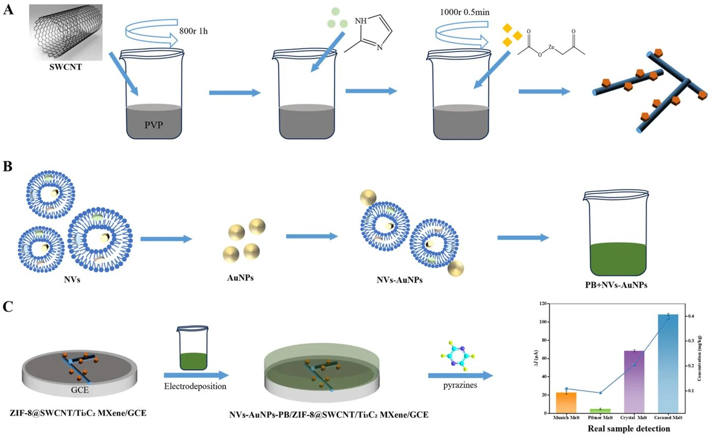
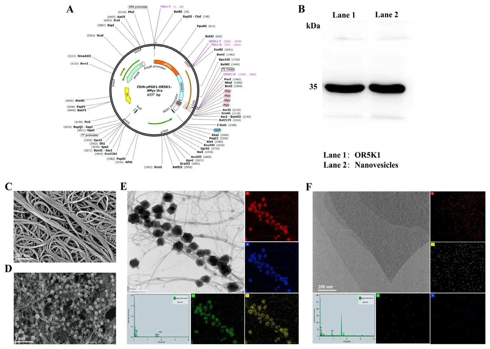
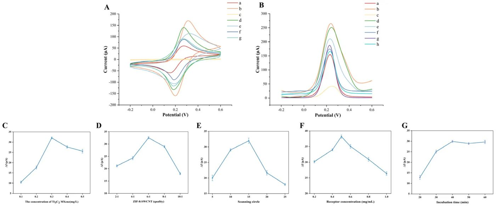
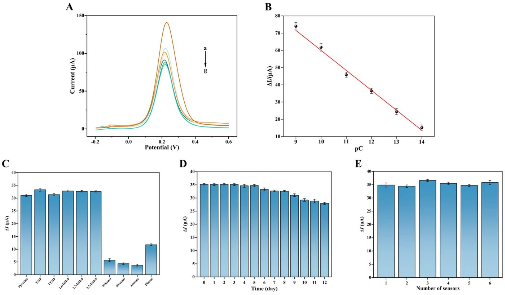
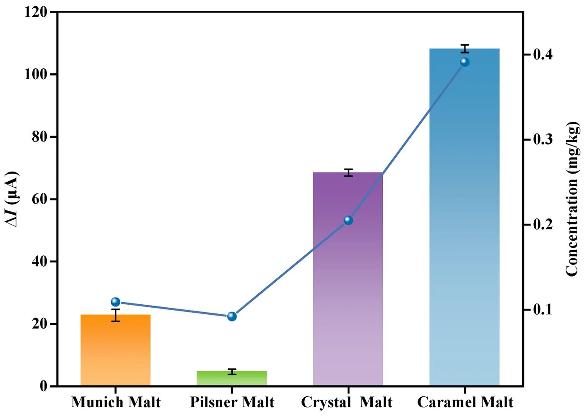
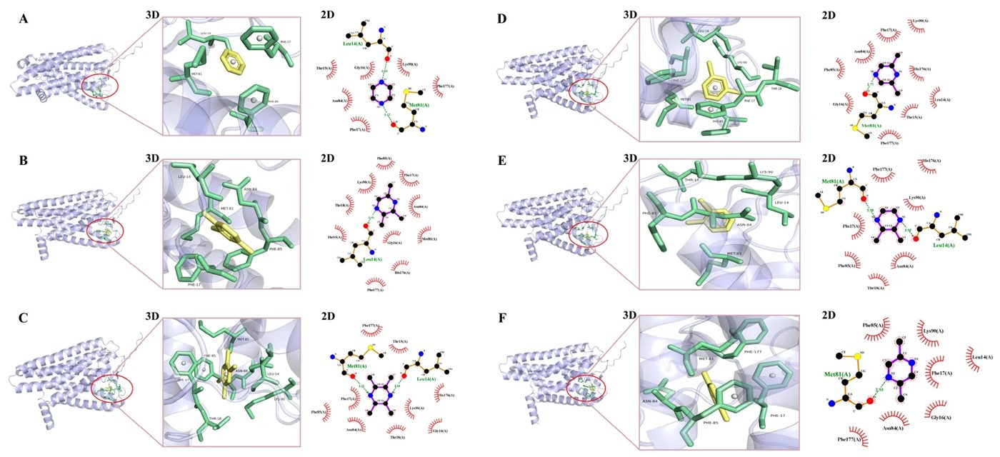

Қуырылған өнімдердің иісі: пиразиндерді анықтайтын жаңа биосенсор


Пиразиндер тағамға тән қуырылған және жаңғақ иісін береді. Дәстүрлі газ хроматографиясы қымбат әрі күрделі болғандықтан, зерттеушілер OR5K1 иіс сезу рецепторына негізделген биосенсор ойлап тапты. Бұл құрылғы адам мұрыны сияқты жұмыс істейді және заттардың өте төмен концентрациясын да анықтай алады.
Басты ойлар
- Биосенсор 10^-14 М-ге дейінгі сезімталдыққа ие.
- MXene мен алтын нанобөлшектері сигнал тұрақтылығын береді.
- Құрылғы уыт сапасын бақылауда тиімді.
Толығырақ
Сенсордың негізі — пиразиндерге ерекше жауап беретін OR5K1 рецепторы. Сигналды күшейту үшін алтын нанобөлшектері (AuNPs), металл-органикалық қаңқалар (ZIF-8), көміртекті нанотүтікшелер (SWCNT) және MXene (Ti3C2) матрицасы жасалды. Бұл комбинация жоғары өткізгіштік пен рецептордың тұрақтылығын қамтамасыз етеді. Пиразин рецептормен байланысқанда электр тогының өзгеруі орын алады және бұл құрылғымен тіркеледі.
Төрт түрлі уыт (солод) үлгісінде өткізілген сынақтар сенсордың 10^-14-тен 10^-9 М-ге дейінгі диапазонда жұмыс істейтінін көрсетті. Газ хроматографиясы деректерімен корреляция коэффициенті 0,96-ны құрады. Молекулалық модельдеу OR5K1 мен пиразин арасындағы өзара әрекеттесу сутектік байланыстар мен Leu14, Phe85 сияқты аминқышқылдарымен гидрофобты байланыстар арқылы жүзеге асатынын көрсетті.
Шектеулер
Зерттеу зертханалық жағдайда өткізілді, өндірістік процестерде қолдану үшін қосымша сынақтар қажет.
Мақаланың толық аудармасы
Түйіндеме
Пиразиндер (1,4-диазабензол) — пиразин ядросы бар азотты гетероциклді қосылыстар класы. Олар кофе, сыра уыты, ет және қытайлық байцзю сияқты әртүрлі табиғи тағамдарда кеңінен таралған. Иісті сезу шегінің өте төмендігіне байланысты пиразиндер негізгі хош иісті қосылыстар болып табылады және олардың түзілу деңгейі көбінесе тағам өнімдерінің сенсорлық сапасын бағалау үшін индикатор ретінде қолданылады. Олар негізінен Майяр реакциясы нәтижесінде түзіледі және өнімдерге пісірілген, қуырылған және жаңғақ иісінің жағымды ноталарын береді. Тағам хош иісіндегі рөлінен бөлек, пиразиндер тірі ағзаларда синтезделетін және қоршаған ортада белгілі бір дәрежеде тұрақтылыққа ие семиохимиялық заттар болып табылады. Сондықтан көптеген пиразиндер әртүрлі түрге жататын даралар арасында химиялық сигнал беруде, мысалы, қорқыныш және қашу реакцияларын тудыруда делдалдық ететіні туралы хабарланған.
Маңызды
Пиразиндер — Майяр реакциясы арқылы түзілетін, сезу шегі төмен және табиғатта сигналдық молекулалар қызметін атқаратын негізгі хош иісті қосылыстар.
Иіс сезу процесі хош иісті молекулалардың иіс сезу рецепторларымен (OR) өзара байланысуынан басталады, бұл ми арқылы иіс ретінде түсіндірілетін сигналдық каскадты іске қосады. OR5K1 иіс сезу рецепторы жақында пиразиндерді анықтауға маманданған рецептор ретінде сипатталды. 273 әлеуетті функционалды адам OR-лары үшін 1100 қосылыс активаторын анықтау барысында Wilkin және әріптестері 2,5-диметилпиразинді OR5K1 үшін арнайы агонист ретінде анықтады. Адамның 616 OR аллелінің ішінде тек OR5K1 және оның жақын гомологтары 2,3,5-триметилпиразинге күшті жауап беріп, пиразиндерге қатысты жоғары селективтілікті көрсетті. 3-хромосомада (3q11.2) орналасқан OR5K1 адамдағы ең көп таралған иіс сезу рецепторларының бірі болып табылады (шамамен 6%). Ол G-ақуызбен байланысқан рецепторлар (GPCR) супертұқымдасының А класына жатады және жеті трансмембраналық архитектураға ие. Сенсорлық емес А класындағы GPCR-лардан айырмашылығы, OR5K1 төмен тізбекті гомологияға ие және шектеулі мөлшердегі танылған нысандары бар «жетім» рецептор болып қала береді. Лигандтың байланысуы G-ақуызын белсендіретін конформациялық өзгерістерді тудырады, бұл cAMP деңгейінің жоғарылауына, арналардың ашылуына және ақыр соңында иіс сезу пиязшығына берілетін әрекет потенциалдарының түзілуіне әкеледі.
Түсіндірме
GPCR (G-ақуызбен байланысқан рецепторлар) — бұл жасуша бетіндегі сенсорлық ақуыздар, олар сыртқы сигналдарды (мысалы, иіс молекулаларын) химиялық реакциялар каскады арқылы жасуша ішіне тасымалдайды.
Пиразин қосылыстарын жоғары сезімталдықпен және селективтілікпен анықтаудың практикалық маңызы бар. Дәстүрлі анықтау әдістері (GC-MS, GC-TOF/MS) дәл болғанымен, қымбат жабдықты талап етеді, күрделі және портативті емес. Коммерциялық электронды мұрындар портативті, бірақ олардың өткізгіш наноматериалдарға негізделген датчиктері анық емес өзара әрекеттесулер салдарынан жеткілікті дәрежеде спецификалық емес. Соңғы жылдары электрохимиялық биосенсорлардың жұмыс өнімділігін жақсарту үшін әртүрлі наноматериалдар зерттелуде. ZIF-8 сияқты металл-органикалық қаңқалар (MOF) тамаша термиялық тұрақтылыққа, өте жоғары кеуектілікке және үлкен меншікті бет ауданына ие, бұл оларды ферменттерді иммобилизациялау және сигналды күшейту үшін идеалды тасымалдағышқа айналдырады. Wang және әріптестері ZIF-67 бетінде күміс нанобөлшектерін (AgNPs) синтездеді. Алтын нанобөлшектері (AuNPs) электрондардың тиімді өтуін жеңілдетеді және Au–S ковалентті байланыстары арқылы рецепторларды иммобилизациялау үшін биоүйлесімді интерфейстерді қамтамасыз етеді. Бір қабырғалы көміртекті нанотүтікшелер (SWCNTs) жоғары өткізгіштікке ие болып, электрондар тасымалының тиімділігін арттырады. Ti3C2 MXene (екі өлшемді өтпелі металл карбиді) металдық өткізгіштігі, гидрофильділігі және беттік функционалды топтары (–O, –OH, –F) арқасында таңдалды, олар электрохимиялық сигналдарды күшейтеді және биомолекулаларды иммобилизациялау үшін қолайлы орта жасайды. Бұл композитте ZIF-8 үлкен бет ауданын қамтамасыз етеді, SWCNTs өткізгіш жолдар ретінде қызмет етеді, MXene электрод өткізгіштігін арттырады және AuNPs электрон өтуін жақсартады. Бұл материалдардың синергиясы жоғары өнімді иіс сезу биосенсорларын жасауға мүмкіндік береді.
Абайлаңыз
Ескерту: сипатталған наноматериалдар әдістерінің көпшілігі зертханалық хаттамалар болып табылады; олардың нақты жағдайдағы тиімділігі қосымша тексеруді талап етеді.
Пиразин, 2,3,5-триметилпиразин (TMP), 2,3,5,6-тетраметилпиразин (TTMP), 2,6-диметилпиразин (2,6-DMeP), 2,3-диметилпиразин (2,3-DMeP) және 2,5-диметилпиразин (2,5-DMeP) Adamas Reagent Co., Ltd. (Шанхай, Қытай) компаниясынан сатып алынды. Метанол, поливинилпирролидон (PVPP), лимон қышқылы, сусыз натрий сульфаты, натрий хлориді, динатрий сутегі фосфаты, мырыш нитраты, 2-метилимидазол және DL-дитиотреитол (DTT) — Shanghai Aladdin Biochemical Technology Co., Ltd. (Шанхай, Қытай) компаниясынан. Бір қабырғалы көміртекті нанотүтікшелер (SWCNTs), хитозан, калий феррицианиді, калий ферроцианиді, калий хлориді, тетрахлороалтын қышқылы, BSA, глицерин және калий дигидрофосфаты — Shanghai McLean Biochemical Technology Co., Ltd. (Шанхай, Қытай) компаниясынан. HEPES буфері, ашытқы сығындысы, пептон, NP-40, BCA ақуызды анықтау жинағы, фенилметилсульфонилфторид (PMSF) — Sangon Biotech (Шанхай, Қытай) компаниясынан. 2-октанол (99,5%, хроматографиялық тазалықта) және қалыпты парафиндер (C7–C22) — Sigma-Aldrich (Сент-Луис, АҚШ және Шанхай, Қытай) компаниясынан. Ti3C2Tx MXene — Nanjing Xianfeng Nanotechnology Co., Ltd. (Нанкин, Қытай) компаниясынан. Стерильді сүзгілер Millex-GP (0,22 мкм) — Merck (Дармштадт, Германия) компаниясынан.
Келесі төрт түрлі уыт қолданылды: Мюнхен уыты (MM, ылғалдылығы 3,4%, түсі 16 EBC, экстрактивтілігі 81,5), Пилзен уыты (PM, ылғалдылығы 4,4%, түсі 3,7 EBC, экстрактивтілігі 82,5), кристалды уыт (CrM, ылғалдылығы 3,4%, түсі 328 EBC, экстрактивтілігі 75,9) және карамель уыты (CaM, ылғалдылығы 2,7%, түсі 800 EBC, экстрактивтілігі 70,6).
DJO1 (BY4741 trp1Δ::natMX) ашытқы штамы литий ацетаты әдісі арқылы трансформацияланды. Ашытқы колониялары OR5K1 экспрессиясын индукциялау үшін 30 °C-та 48–72 сағат бойы YPD ортасында өсірілді.
Түсіндірме
Гетерологиялық экспрессия — бір ағзаның генін (бұл жағдайда адам) басқа ағзаға (ашытқы) енгізіп, зертханалық жағдайда тиісті ақуызды өндіру әдісі.
Нановезикулалар алдыңғы тәжірибелер негізінде дайындалды. Ашытқы мәдениетінің ерітіндісі (OD600: 0,6–0,8) жасушаларды жинау үшін 5000 айн/мин жылдамдықта 2 минут бойы центрифугаланды. Жасушалар 5 мл мұзды сумен (0 °C) 5000 айн/мин жылдамдықта 2 минут бойы екі рет жуылды. Содан кейін жасушалар 500 мкл суық лизис буферімен (pH 6,8, 40 мМ HEPES, 0,2% (w/w) NP-40, 10 мМ DTT, 1 мМ PMSF) жуылды, центрифугалау арқылы жиналды, 1,5 мл лизис буферінде суспензияланды және 1,5 мл көлемді пробиркаларға ауыстырылды. Нановезикулалар 0,5 мм шыны шарлар көмегімен ұсақтау әдісімен дайындалды. Суспензия жылдам ұсақтағышта 65 Гц жылдамдықта 1 минут бойы өңделді, содан кейін 1 минут мұз үстінде қалдырылды. Цикл 8–10 рет қайталанды. Қоспа 6000 айн/мин жылдамдықта және 4 °C-та 24 минут бойы центрифугаланды. Супернатант 4 °C-та 60 минут бойы 100 000 g жылдамдықта центрифугаланды. Нановезикулалар тұнбасы 10% (w/w) глицерині бар лизис буферінде суспензияланды және −80 °C-та сақталды. Ақуыз концентрациясы BSA стандартымен BCA жинағы көмегімен анықталды. Пайдаланар алдында суспензия 10 мМ PBS (pH 7,2–7,4) ерітіндісінде сұйылтылды, мұзды суда 10 минут ультрадыбыспен өңделді және стерильді сүзгі арқылы (0,22 мкм) өткізілді.
OR5K1 экспрессиясы вестерн-блот талдауымен расталды. NVs және ашытқы жасушаларының үлгілері (10 мкг/мл ақуыз) полиакриламидті гель электрофорезінен өткізілді. Ақуыздар PVDF-мембранаға ауыстырылды. Мембраналар 1% майсыз сүті бар TBST-де 20 минут бойы блокталды, 25 °C-та 1 сағат бойы c-Myc-қа қарсы бастапқы антиденелермен (Abbkine, 1:1000 сұйылтылған), содан кейін 25 °C-та 1 сағат бойы екінші реттік антиденелермен (HRP-конъюгацияланған, Abbkine, 1:5000 сұйылтылған) инкубацияланды. Мембраналар TBST-де үш рет 10 минуттан жуылды және хемилюминесцентті реагент көмегімен айқындалды.


Суреттің толық сипаттамасы
DJO1 ашытқысында өндірілген OR5K1 және наноматериалдардың сипаттамасы. (A) OR5K1 кодтайтын ClhN-4Myc-Ura плазмидасының аминқышқылдық тізбегі. (B) Ашытқы жасушаларындағы және олардан алынған NVs құрамындағы OR5K1-ге Вестерн-блот талдауы. (C) SWCNT-тің СЭМ суреттері. (D) ZIF-8@SWCNT-тің СЭМ суреттері. (E) ZIF-8@SWCNT-тің ТЭМ суреттері және ЭДС-карталау. (F) Ti3C2 MXene-нің ТЭМ суреттері және ЭДС-карталау.


Суреттің толық сипаттамасы
Иіс сезу биосенсорының электрохимиялық мінез-құлқын сипаттау және эксперименттік жағдайларды оңтайландыру. (A) ЦВА. (B) 0,1 М KCl бар 5,0 мМ (Fe(CN)6)3−/4− ерітіндісіндегі әртүрлі модификацияланған электродтардың ДПВ қисықтары: (a) GCE, (b) Ti3C2 MXene, (c) ZIF-8@SWCNT/GCE, (d) ZIF-8@SWCNT/Ti3C2 MXene/GCE, (e) AuNP–PB/ZIF-8@SWCNT/Ti3C2 MXene/GCE, (f) OR5K1–NV–AuNP–PB/ZIF-8@SWCNT/Ti3C2 MXene/GCE, (g) BSA/OR5K1–NV–AuNP–PB/ZIF-8@SWCNT/Ti3C2 MXene/GCE және (h) BSA/OR5K1–NV–AuNP–PB/ZIF-8@SWCNT/Ti3C2 MXene-TMP. (C) Ti3C2 MXene концентрациясы. (D) ZIF-8-дің SWCNT-ке қатынасының массалық үлесі. (E) Сканерлеу циклдарының саны. (F) Рецептор концентрациясы. (G) Инкубация уақыты.


Суреттің толық сипаттамасы
Иіс сезу биосенсорының пиразин қосылыстарына жауабы. (A) OR5K1–NV–AuNP–PB/ZIF-8@SWCNT/Ti3C2 MXene/GCE-нің TMP-нің әртүрлі концентрацияларына (a–g: 0, 10−14, 10−13, 10−12, 10−11, 10−10 және 10−9 М) ДПВ жауабы. (B) TMP-ні анықтау үшін OR5K1–NV–AuNP–PB/ZIF-8@SWCNT/Ti3C2 MXene/GCE-нің калибрлеу қисығы (n = 5). (C) Сенсордың пиразин қосылыстарына (пиразин, TMP, TTMP, 2,6-DMeP, 2,3-DMeP, 2,5-DMeP, этанол, гексаналь, ацетон, фенол) селективті жауабы. (D) Сенсордың сақтау кезіндегі TMP-ге жауаптары. (E) Сенсор жауаптарының қайталану мүмкіндігі.




Зерттеу сызбасы
Мақала рецензияланатын Foods (Basel, Switzerland) журналында жарияланған. Бірақ бұл да бір зерттеу ғана, түпкілікті қорытынды емес.
Дереккөз
| Дереккөз | Санат | Лицензия |
|---|---|---|
| Foods (Basel, Switzerland) (Europe PMC) | maillard | CC BY 4.0 |
Дереккөздер
| Дереккөз | Сілтеме |
|---|---|
| Страница статьи | europepmc.org |
| Полный текст (PDF) | europepmc.org |
| DOI | doi.org |
| Метаданные Crossref | api.crossref.org |
| Europe PMC | europepmc.org |